第 13 章
ファイル
この章では、ドキュメントを作る・開く・保存する操作と、STEP などの他の形式のインポート・エクスポート、取り込んだ形状の修復を説明します。異常終了や同時に開いたときに作業を守る仕組み（自動回復・ロック）と、ファイルの中身（同梱キャッシュ・外部の格納先）も説明します。読み終えると、他の CAD のデータを取り込んで直し、編集して書き出せるようになります。
13.1 ファイルの形式
mcad のドキュメントは、拡張子 .mcad の 1 つのファイルです。中にはフィーチャの定義・パラメータ・結果の要約・サムネイルのほか、取り込んだ形状のデータと計算結果のキャッシュが入ります。フォルダの検索パスやプロジェクトの設定は要りません。ファイルを渡せば、相手も同じ形を開けます。
| 形式 | 拡張子 | インポート | エクスポート |
|---|---|---|---|
| STEP | .step .stp | ○ | ○（AP 214・AP 242。名前付き STEP） |
| IGES | .iges .igs | ○ | ○ |
| BREP | .brep | ○ | ○ |
| STL | .stl | ○ | ○（バイナリ・ASCII） |
| OBJ | .obj | ○ | ○ |
| PLY | .ply | ○ | ○（バイナリ・ASCII） |
| 3MF | .3mf | ○ | ○ |
| 画像（PNG・JPEG） | .png .jpg | — | ○（3D ビューの画像） |
STEP・IGES・BREP は形状（面と辺をもつ B-rep）で、STL・OBJ・PLY・3MF は三角形のメッシュです。メッシュは、形を表す面のかたまりとして取り込みます（編集の制限はインポートのオプションにあります）。
13.2 新規作成とテンプレート
ドキュメントは、テンプレート（出発点になる空のドキュメント）から作ります。組み込みのテンプレートは［標準（mm）］と［標準（in）］で、違いは長さの単位だけです。
クイック アクセス ツールバーの［新規］（Ctrl+N）を押すと、既定のテンプレートで新しいドキュメントが開きます。名前は［無題 1］、［無題 2］… の順です。
テンプレートを選びたいときは、メニューの［ファイル］ → ［テンプレートから新規作成］（Ctrl+Shift+N）を押します。一覧からテンプレートを選び、［作成］を押します。
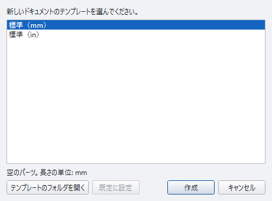
図 13-1 テンプレートの一覧。選んだテンプレートの説明が下に出ます。［既定に設定］を押すと、Ctrl+N で使うテンプレートになります。

自分のテンプレートは、設定済みのドキュメントから作ります。単位・パラメータ・スケッチ・フィーチャを入れたドキュメントを開き、メニューの［ファイル］ → ［テンプレートとして保存］を押してテンプレート名を入力します。保存したテンプレートは、設定のフォルダの templates に .mcad として置かれ、次から一覧に出ます。［テンプレートのフォルダを開く］で、そのフォルダを開けます。
13.3 開く
クイック アクセス ツールバーの［開く］（Ctrl+O）を押します。ファイルのダイアログが開きます。種類の既定は［対応しているすべてのファイル］です。
ドキュメント（
.mcad）を選ぶと、新しいタブに開きます。STEP などを選ぶと、新しいドキュメントを作ってインポートのダイアログが出ます。
複数のドキュメントはタブで切り替えます（リボンの［表示］タブ → ［ウィンドウ］パネル → ［次のドキュメント］は Ctrl+Tab、リボンの［表示］タブ → ［ウィンドウ］パネル → ［前のドキュメント］は Ctrl+Shift+Tab）。すでに開いているファイルをもう一度開くと、新しく開かず、そのタブが前に出ます。開けなかったときは、右下の知らせに理由が出ます（第 29 章）。
最近のドキュメントは、リボンの［ファイル］のメニューの［最近使ったドキュメント］に、新しい順に 10 件まで並びます。選ぶと開きます。

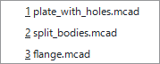
開いたドキュメントのほかに、保存したドキュメントも並びます。メニューには名前だけが出ます。項目にマウスを合わせると、フォルダを含むパスが出ます。
移動や削除でファイルが無くなった項目は、灰色になって選べません。最近のドキュメントが 1 つも無いときは、灰色の［（最近使ったドキュメントはありません）］が 1 行だけ出ます。
メニュー バーにも、同じ［最近使ったドキュメント］があります。メニュー バーは、［オプション］の［画面］ページで［リボンの上にメニュー バーも表示］を入れて、mcad を起動し直すと出ます。
13.4 保存する
ファイルの操作は、リボンの左上の［ファイル］のメニューにまとまっています。

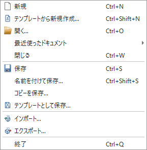
| コマンド | 動作 |
|---|---|
| ［保存］（Ctrl+S） | 今のファイルに上書きします。まだ保存していないドキュメントは、名前と場所を尋ねます |
| ［名前を付けて保存］（Ctrl+Shift+S） | 別の名前で保存します。以後の保存先と、タブの名前が新しいものになります |
| ［コピーを保存］ | 開いているドキュメントは変えずに、コピーを書きます |
保存すると、タブの名前の *（未保存の印）が消えて、右下に…に保存しましたと出ます。保存は、一時ファイルに書いてから置き換えるので、途中で止まっても元のファイルは壊れません。保存のときに、前の版を 名前.mcad.bak として残します（［保存時に残すバックアップの数］を増やすと .bak2… も残ります。1〜9）。
保存できないとき（読み取り専用・ディスクが一杯・パスが長すぎるなど）は、理由が知らせに出ます（第 29 章）。
13.5 閉じる・終了する
メニューの［ファイル］ → ［閉じる］（Ctrl+W）か、タブの × で、ドキュメントを閉じます。保存していない変更があると、「…には保存していない変更があります。保存しますか?」と確認が出ます。［保存］・［破棄］・［キャンセル］から選びます。メニューの［ファイル］ → ［終了］（Ctrl+Q）でアプリを終えるときも、開いているドキュメントごとに同じ確認が出ます。
13.6 インポート
他の CAD のデータは、インポートでドキュメントに取り込みます。ファイルは一度だけ読まれ、形状はドキュメントの中に保存されます。取り込んだあとは、元のファイルを消しても、開き直せて再計算もできます。
開いているパーツに取り込むときは、リボンの［管理］タブ → ［挿入］パネル → ［インポート］をクリックします。［インポート］のダイアログが出ます。
［ファイル］に取り込むファイルを入力するか、［参照］で選びます。［形式］は拡張子で自動で選ばれます。
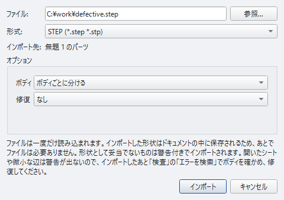
図 13-4 ［インポート］のダイアログ。［インポート先］は今のパーツです。［オプション］は形式によって変わります。 ［オプション］を決めます（次の表）。［インポート］を押します。
読み込みは別のプロセスで行うので、大きなファイルでもウィンドウは止まりません。終わると、ブラウザに［インポート1］のフィーチャとボディが増え、「…からインポートしました」と知らせが出ます。
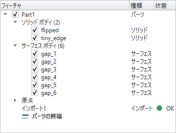
図 13-5 取り込み後のブラウザ。ソリッドとサーフェスのボディが分かれて並び、最後に［インポート1］があります。


クイック アクセス ツールバーの［開く］で STEP などを選んだときは、［インポート先］が［新しいドキュメント］になります。［キャンセル］を押すと、その新しいドキュメントも閉じます。

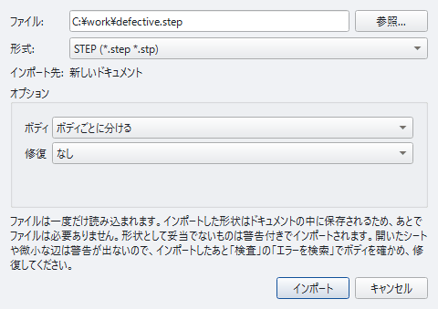
インポートのオプション
| 形式 | オプション |
|---|---|
| STEP・IGES | ［ボディ］（［ボディごとに分ける］ / ［ソリッドを 1 つのボディにまとめる］）、［修復］（［なし］ / ［自動で修復］） |
| BREP | 上の 2 つと、［単位］（［ミリメートル］・［センチメートル］・［メートル］・［インチ］）。BREP には単位が書かれていません |
| STL・OBJ・PLY | ［単位］と［ファセット角］（既定 1 deg。0〜45°） |
| 3MF | ［ファセット角］（単位はファイルに書かれています） |

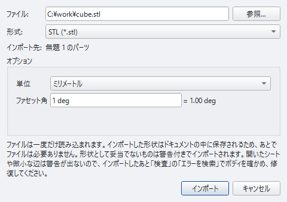
［ファセット角］は、法線の差がこの角度より小さい隣り合う三角形を 1 つの面にまとめる角度です。箱なら 6 つの面になります。
STEP のアセンブリは、配置済みの部品を平らにしたボディとして取り込みます。名前・色・レイヤー（層）も取り込みます。名前はブラウザの［ソリッド ボディ］のボディ名になります（F2 で変えられます）。IGES の色と層は読みません。
メッシュのボディは［メッシュ ボディ］に入ります。体積は三角形から計算します。閉じていないメッシュは、体積が信頼できないと知らせます。メッシュのボディには、フィレットなどの編集はできません。STEP・IGES・BREP にも書き出せません（STL・OBJ・PLY・3MF には書き出せます）。
形状として妥当でないボディは、警告付きで取り込まれます（知らせに「…は正しくありません。エラーを検索して修復してください」と出ます）。
元のファイルを消しても開ける
ブラウザの［インポート1］をダブルクリックすると、プロパティ パネルの［元データ］に、取り込んだファイルの名前と、ドキュメントが持つデータの大きさ・チェックサム（先頭 8 桁）が出ます。読み取り専用です。形状のデータはドキュメントの中にあるので、元のファイルを移動・削除しても影響しません。

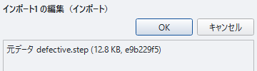
13.7 形状チェックと修復
他の CAD の形状には、隙間・面の向きの誤り・微小な辺などの欠陥があることがあります。欠陥があるとソリッドにならず、穴やフィレットが足せません。調べる → 直すの順で対処します。
取り込んだあとのブラウザで、［ソリッド ボディ］と［サーフェス ボディ］の数を見ます。閉じたソリッドになっていない面は、［サーフェス ボディ］に入ります。
リボンの［検査］タブ → ［解析］パネル → ［エラーを検索］をクリックし、［検索］を押します。表に、問題の［重大度］・［問題］・［要素］・［ボディ］が並びます。
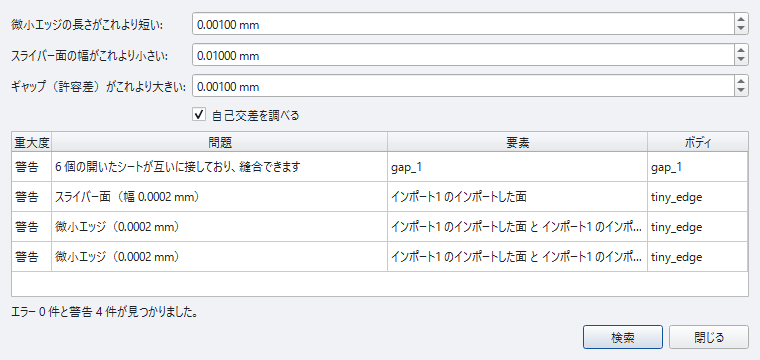
図 13-9 エラーを検索の結果。隙間のあるシートと、微小エッジ・スライバー面（細すぎる面）が警告として出ます。 このダイアログは開いたまま、ビューとブラウザを操作できます（インポート・エクスポート・新規作成・オプションのダイアログは、閉じるまでほかの操作ができません）。検索が終わった時点では、問題のあるボディ・面・エッジのすべてが選ばれます。表の行を選ぶと、その要素だけが選ばれます。
ビューの何も無い所をクリックして、選択を解除します。検索の結果が選ばれたままだと、修復は、選ばれたボディ（この例では［gap_1］）だけが対象になります。
リボンの［3D モデル］タブ → ［修正］パネル → ［修復］をクリックします。ボディを選ばずに始めると、すべてのソリッドとサーフェスが対象です。ボディを選んでから始めると、そのボディだけを直します。
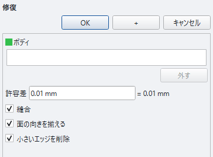
図 13-10 修復のフォーム。［許容差］の範囲で、［縫合］（隙間を閉じてばらばらの面をつなぐ）・［面の向きを揃える］・［小さいエッジを削除］を行います。 ［OK］で確定します。ブラウザに［修復1］が増え、閉じたシェルはソリッドになります。
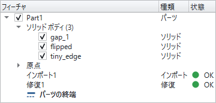
図 13-11 修復の後。隙間のあったシートが 1 つのソリッドにまとまります。 検索のダイアログを開いたままなら、［検索］をもう一度押して、結果を確かめます。


この例では、修復のあとにギャップ: 許容差 0.00525 mmの警告が出ます。縫合した縁の許容差が、しきい値（既定 0.001 mm）より大きいためです。［ギャップ（許容差）がこれより大きい］を 0.01 mm にして調べ直すと、問題は見つかりませんでした。と出ます。
修復したあとは、普通のソリッドと同じに、穴・フィレットなどを足せます。取り込んだボディの面にかけた参照は、保存して開き直しても同じ面に付きます。
インポートの［修復］を［自動で修復］にすると、取り込みと同時に直ります。隙間が［許容差］（既定 0.01 mm）より大きいときは縫合されません。許容差を大きくして、もう一度試します。
13.8 エクスポート
リボンの［管理］タブ → ［挿入］パネル → ［エクスポート］をクリックします。［エクスポート］のダイアログが出ます。
［形式］を選び、［ファイル］に保存先を入力するか、［参照］で選びます。［オプション］・［範囲と座標系］を決めます。
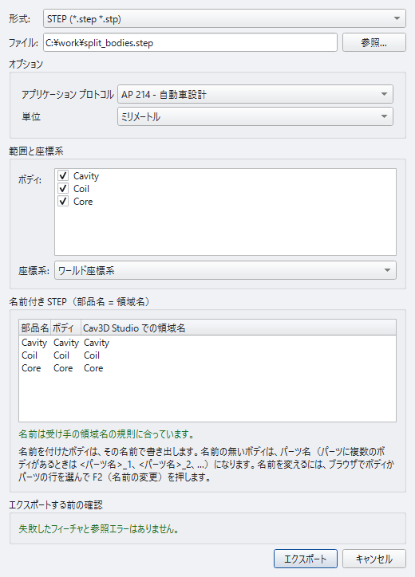
図 13-12 STEP のエクスポート。［範囲と座標系］でボディを選び、［名前付き STEP（部品名 = 領域名）］の表で、STEP に書かれる部品名を確かめます。 下の［エクスポートする前の確認］を見ます。問題がなければ［エクスポート］を押します。

書き出しは別のプロセスで行うので、ウィンドウは止まりません。終わると「…にエクスポートしました」と知らせが出ます。同じ名前のファイルがあると、「…は既にあります。置き換えますか?」と確認します。スケッチを編集している間は、エクスポートできません（スケッチを終了するかキャンセルします）。
形式ごとのオプション
| 形式 | オプション |
|---|---|
| STEP | ［アプリケーション プロトコル］（［AP 214 - 自動車設計］が既定、［AP 242 - 管理されたモデルベース 3D エンジニアリング］）、［単位］ |
| IGES・BREP | ［単位］ |
| STL・PLY | ［形式］（［バイナリ］ / ［ASCII］）、［解像度］、［単位］ |
| 3MF・OBJ | ［解像度］、［単位］ |
| PNG 画像 | ［画像サイズ］（［ビューと同じ］・［幅 1920 px］・［幅 3840 px］）、［背景］（［ビューと同じ］・［白］・［透明］） |
| JPEG 画像 | ［画像サイズ］（背景は透明にできません） |

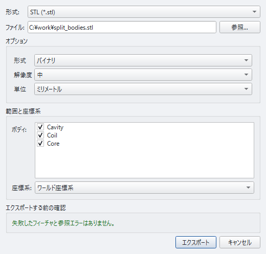
［解像度］は、曲面を三角形にする細かさです。［高］はサーフェス偏差 0.01 mm、［中］は 0.03 mm（法線偏差 17°）、［低］は 0.1 mm です。［カスタム］で値を直接決められます。
［単位］は、書き込む数値の単位です（［ミリメートル］・［センチメートル］・［メートル］・［インチ］）。受け取る側の単位に合わせます。
画像は、画面に出ている 3D ビューをそのまま撮ります。ビューが小さいと、小さい画像になります。
範囲と座標系
［範囲と座標系］では、書き出すボディと、書き出しの原点・軸を決めます。
［ボディ］の一覧のチェックを外したボディは書き出しません。STEP・IGES・BREP では、メッシュのボディにはチェックを付けられません。
［座標系］は［ワールド座標系］が既定です。パーツに UCS があれば、一覧から選べます。選ぶと、その UCS の原点と軸で座標を書きます（第 5 章）。
［エクスポートする前の確認］には、失敗したフィーチャと、見つからない参照（参照エラー）が出ます。失敗したフィーチャがあっても書き出せますが、書き出す形はそのフィーチャの前の状態です。先にエラーを直します。

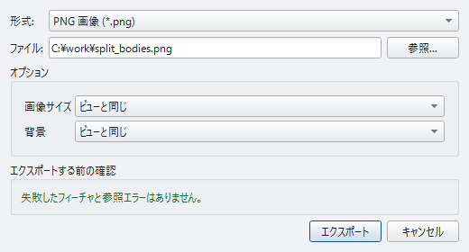
STEP の［名前付き STEP（部品名 = 領域名）］の表の［部品名］は、STEP に書かれる部品の名前です。名前を付けたボディは、その名前で書かれます。名前のないボディは、パーツの名前で書かれます（パーツにボディが複数あるときは、パーツ名_1・パーツ名_2… の形です）。名前を変えるには、ブラウザでボディかパーツの行を選んで F2 を押します。表の使い方は、第 26 章にあります。構成ごとに一度に書き出す方法は第 11 章と第 26 章にあります。
13.9 自動回復
保存していない変更があるドキュメントは、一定の間隔で回復用の写しに自動で書かれます。mcad が異常終了（強制終了・停電など）したあと、次の起動で写しから作業を取り戻せます。
間隔は、［オプション］の［自動回復］ページの［自動回復の間隔（秒）］です（既定 120 秒。0 で書きません）。［ドキュメントごとに保持する回復用の写しの数］（既定 3）だけ、古い版も残ります。
正常に保存した・閉じたドキュメントの写しは、消えます。
異常終了のあとに mcad を起動すると、［ドキュメントの復旧］のダイアログが出ます。復旧するドキュメントにチェックを付けます。
一覧の行を選び、［復旧方法］を選びます。［未保存のドキュメントとして開く］は、写しを新しいタブに開きます。［元のファイルを上書きする］は、元のファイルに書き戻します（前の版は
.bakに残ります）。［別の名前で保存］は、［保存先］に書きます。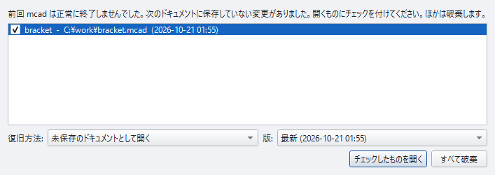
図 13-15 復旧のダイアログ。写しが複数あるときは、［版］で最新か古い版を選べます。 ［チェックしたものを開く］を押します。チェックを外した写しと、［すべて破棄］を押したときの写しは捨てられます。

尋ねずに決めて起動するには、起動のオプション --recover を使います（第 27 章）。
13.10 ファイルのロック
ドキュメントを開いている間、同じフォルダに 名前.mcad.lock という小さなファイルを置きます。別のプロセスや別の人が同じドキュメントを開こうとすると、このファイルを見て、読み取り専用で開きます。

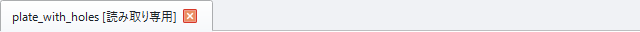
[読み取り専用] が付き、ウィンドウの題名にも付きます。読み取り専用のドキュメントは、編集はできますが、そのファイルには保存できません。［保存］を押すと「…は読み取り専用のため上書きできません。名前を付けて保存しますか?」と尋ね、［名前を付けて保存］で別のファイルに保存できます。
前のプログラムが異常終了してロックが残っているときは、「…のロックが残ったままです（プログラムが異常終了しました）。ロックを引き継いで、編集用に開きますか?」と尋ねます。［ロックを引き継いで開く］か［読み取り専用で開く］を選びます。別のコンピュータが開いたまま長く更新がないときも、同じ確認が出ます。
ロックのファイルを作れないとき（読み取り専用のフォルダなど）は、開けますが、「他の利用者には警告されません」と知らせます。フォルダに余分なファイルを置きたくないときは、［オプション］の［ファイル］ページで［開いているドキュメントをロックする］を切ります。
13.11 同梱キャッシュと外部の格納先
ドキュメントを保存するとき、計算結果の形状（キャッシュ）を同梱します。開くときに再計算が要らず、すぐに表示されます。大きなインポートデータは、ドキュメントの外のフォルダに置けます。設定は［オプション］の［ファイル］ページにあります。

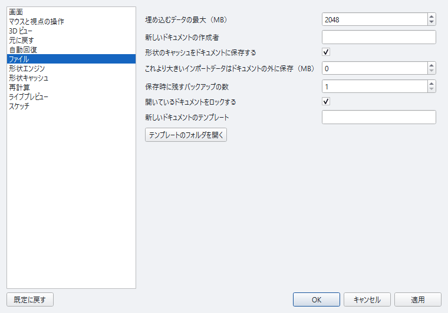
同梱キャッシュと「未検証」
同梱したキャッシュで開いたドキュメントは、まだ計算し直していない結果なので、ステータスバーに［未検証の保存済み結果］と出ます。ツールチップには、ファイルに保存されたキャッシュから読み取ったフィーチャの数が出ます。

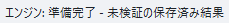

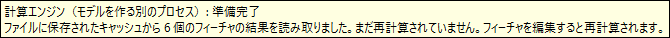
フィーチャを編集すると、先端までを計算し直し、［未検証の保存済み結果］が消えます。エクスポートは同梱の結果を使わず、計算し直してから書きます。
図面のビューも、保存したビューからすぐに表示します。計算し直して確かめるまで、ブラウザのビューの行とキャンバスのビューの左上に小さく［未確認］と出ます。操作の手が空くと数秒で確かめて消えます。保存したビューが計算し直したビューと違っていたら（ファイルが mcad の外で変更されたなど）、計算し直したビューに置き換えて通知します。印刷とエクスポートは、確かめてから書きます。
ファイルを小さくしたいときは、［形状のキャッシュをドキュメントに保存する］を切ります。出どころの分からないドキュメントは、［形状キャッシュ］ページの［ドキュメントに同梱されたキャッシュを使う］を切ると、必ず計算し直して開きます。
外部の格納先
［これより大きいインポートデータはドキュメントの外に保存（MB）］を 1 以上にすると、その大きさ以上のインポートデータは、ドキュメントの隣の 名前.mcadsim フォルダに置かれます。ドキュメントには、チェックサムだけが入ります。既定の 0 は、すべてをドキュメントの中に入れます。
設定は、［OK］か［適用］を押すとすぐに効きます。mcad を起動し直す必要はありません。効くのは、設定を変えたあとに取り込むデータです。すでに取り込んだデータの置き場所は変わりません。
基準になる大きさは、取り込んだあとにドキュメントが持つデータの大きさです（元のファイルを消しても開けるで見る、プロパティ パネルの［元データ］の大きさ）。元のファイルより小さいことがあります。
ドキュメントを別の場所へコピーするときは、
名前.mcadsimフォルダも一緒にコピーします。［名前を付けて保存］では、格納先も一緒に写されます。格納先を移動・改名しても、同じフォルダにある
.mcadsimフォルダのうち、そのドキュメントのものが見つかります。見つからないと、そのデータを使う［インポート］のフィーチャが「データ … が見つかりませんでした」のエラーになります。ドキュメントは開けます。